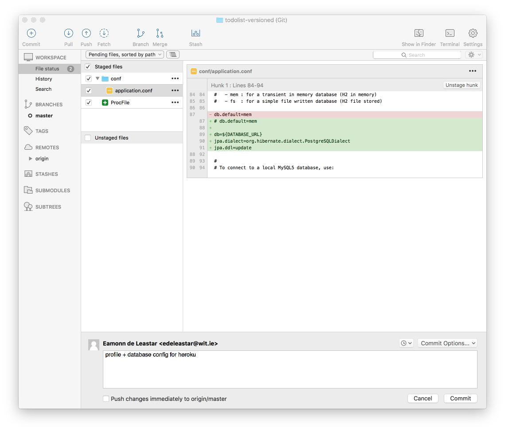
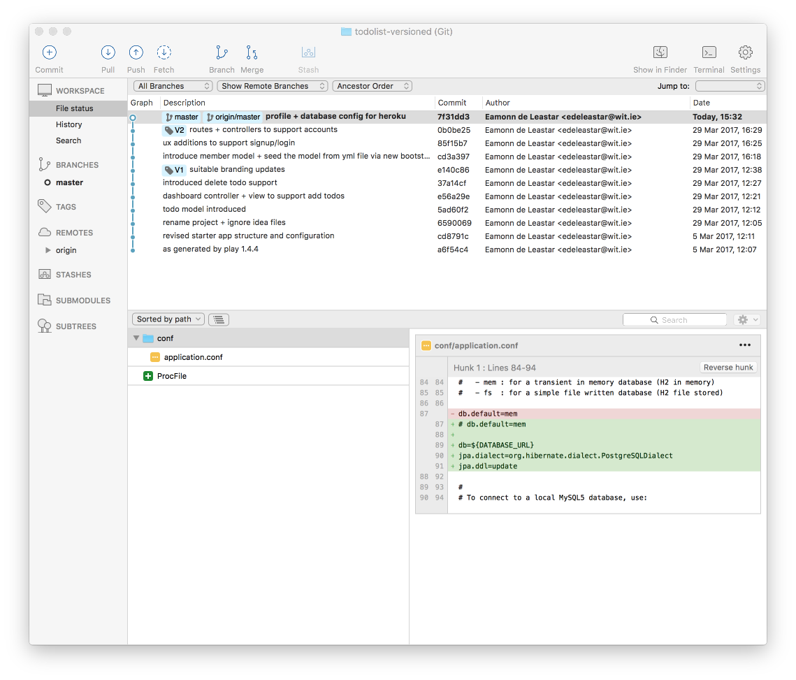
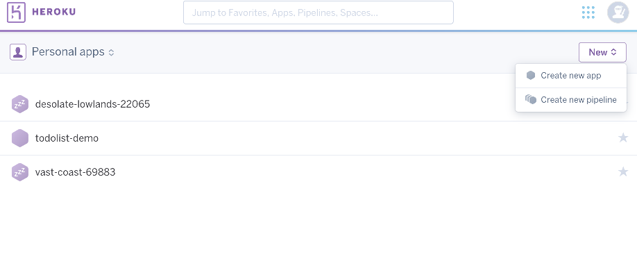
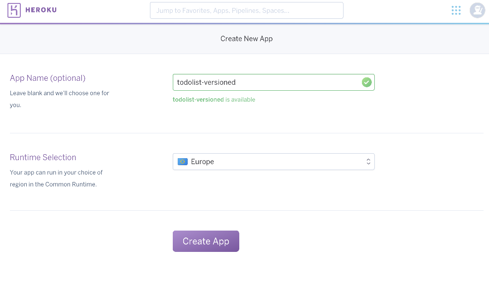
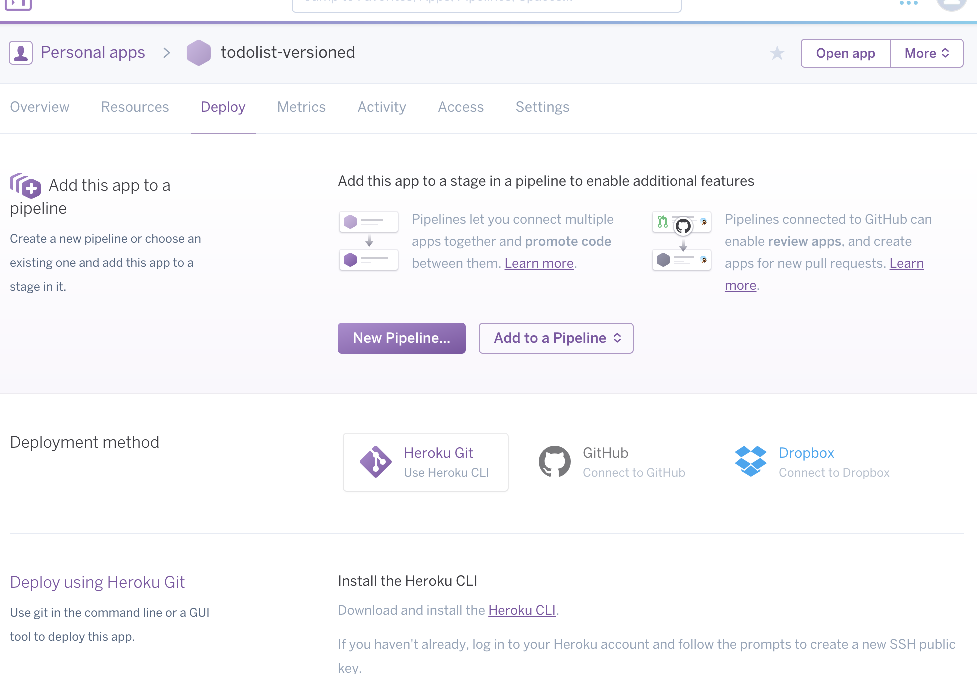
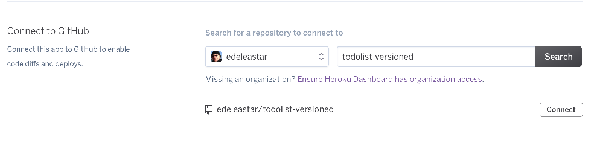
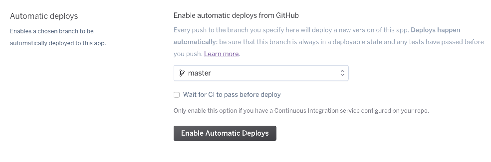
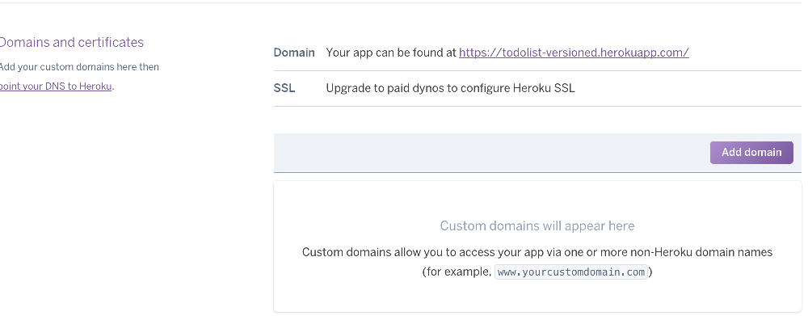
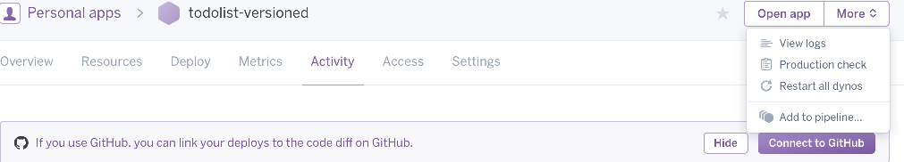
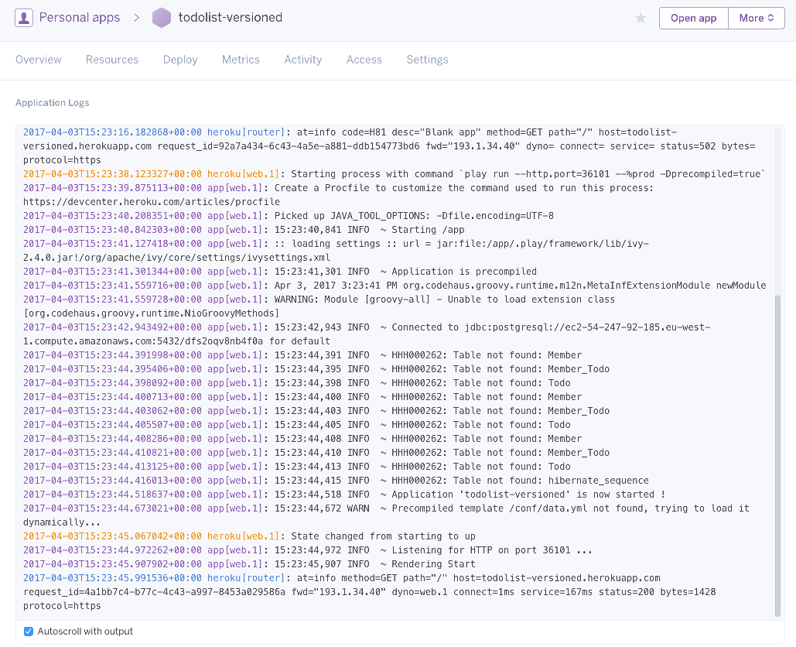

Deploy the an app to Heroku. This will require a heroku account + a locally installed git tool set.
For this lab, you must have your repository on github.com. See Lab 11 for guidance and examples using Sourcetree.
Create an new account on Heroku:
and log in.
Create a new files in your project called ProcFile - in the root of the project:
web: play run --http.port=$PORT $PLAY_OPTSIn the conf folder, edit application.conf and locate the database configuration (around line 80):
# db.default=mem
db=${DATABASE_URL}
jpa.dialect=org.hibernate.dialect.PostgreSQLDialect
jpa.ddl=updateIn the above we commented out tue db.default=mem line, and included three new lines.
Commit these changes:

... and the push to github:

Create a new app on heroku:

Give the app a name and region:

In the Deploy screen, press Connect to GitHib:

.. and on the next screen, enter your github + repositort name and press connect:

Then press the Enable Automatic Deploys button:

Select the 'Settings' screen, and scroll down until you see your domain:

You should see the url for the deployed app there.
If you try to visit it, you will find it is not available just yet.
The settings we configure on the previous step has connect our app to Github - and when push a change to github, it will automatically start the app.
Make a small cosmetic change now (add a space somewhere), stage, commit and push.
After a few minutes the app should be live - on the same url that you checked earlier.
If you go to the Activity - you can view the logs by selecting the more button:

This will display the same logs that were appearing locally (in the command line), except these logs are now in a browser window, connected to your app:

Monitor the logs - and verify that the console seems to display messages from the deployed app.
Make some more cosmetic changes - perhaps changing the wording on some the the screens.
Practice staging, commiting and pushing these changes. Check the logs to see what is happing just after you push. Have a look to see that the deployed app embodies the new version.